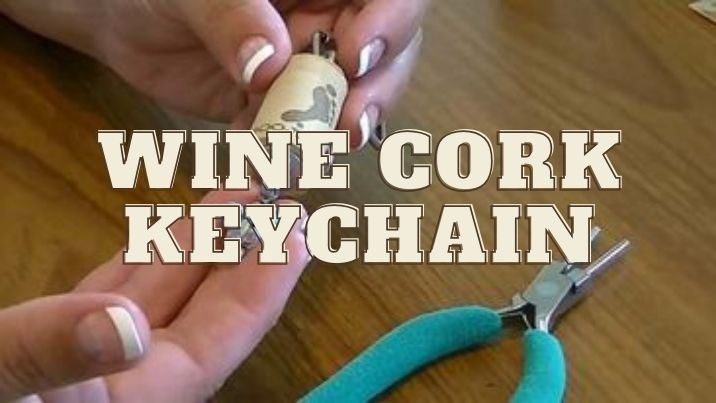
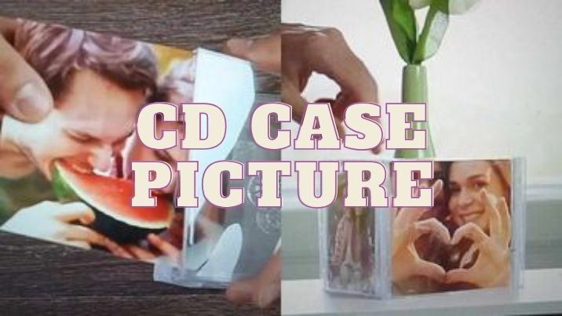

Upcycling is a creative way to give new life to items that might otherwise be thrown away. Our website provides creative inspiration for people interested in crafts and DIY projects. Our website offer step-by-step tutorials and instructions, helping users learn new crafting techniques and skills. This educational aspect is valuable for both beginners and experienced crafters. Here are some clever ways to upcycle everyday items around you:
 